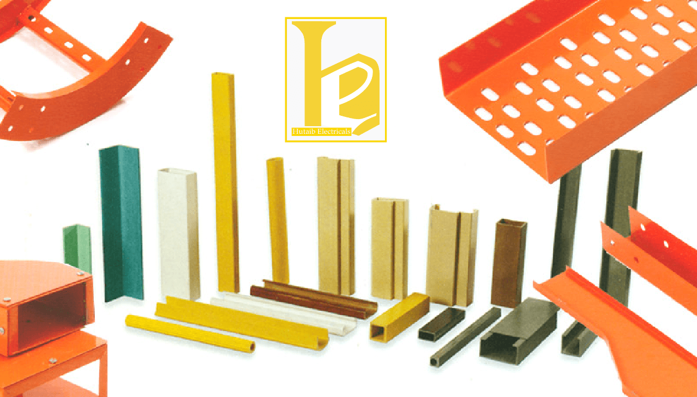

Leading Cable Tray Supplier ,Exporter and Manufacturer in India - Hutaib Electricals

07-May-2021 || By: Admin
Hutaib Electricals is manufacturer, supplier, merchant and exporter of a wide range of Cable Trays alongside their extras like Perforated Cable Tray, Ladder Type Cable Trays , Raceways Cable Trays and Basket Cable Trays. Our items are ISO affirmed and all meets the standards of significant State and semi government foundation bodies in India.
We manufacture a total scope of
cable trays
and modern cable trays, which are inventive in plan, simple to introduce and financially savvy in use. As these trays come in powder covered completion, these are erosion safe and can be utilized in open air spaces. These trays are ideal to help enormous volumes of organization cables and furthermore help with giving smooth progress around hindrances.What is a Cable Tray?
In the electrical wiring of structures, a cable tray system is utilized to help protect electrical cables utilized for power conveyance, control, and correspondence. Cable trays are utilized as a choice to open wiring or electrical course frameworks, and are generally utilized for cable administration in business and modern development. They are particularly helpful in circumstances where changes to a wiring framework are expected, since new cables can be introduced by laying them in the tray, rather than getting them through a line.
What is a Cable Tray utilized for?
A few sorts of trays are utilized in various applications. A strong base tray gives the greatest security to cables, however requires cutting the tray or utilizing fittings to enter or leave cables. A profound, strong nook for cables is known as a cable station or cable box.
A ventilated tray has openings in the lower part of the tray, permitting some air course around the cables, water seepage, and permitting some residue to fall through the tray. Little cables may leave the tray through the ventilation openings, which might be either spaces or openings punched in the base. A ladder cable tray has the cables upheld by a cross bar, comparably to the rungs of a ladder , at ordinary spans on the request for 4 to 12 inches (100 to 300 mm)
Normal cable trays are made of galvanized steel, stainless steel, aluminium, or glass-fibre reinforced plastic. The material for a given application is picked depending on where it will be utilized. Stirred tray might be made of pre-aroused steel sheet created into a tray, or might be hot-plunge excited after manufacture. At the point when a stirred tray is sliced to length in the field, typically the cut surface will be painted with a zinc-rich compound to shield the metal from erosion.
We are the leading Manufacturer , Supplier and Exporter Of The Following Cable Trays :
Ladder Cable Trays :
Cable ladder tray and cable tray system are intended for use as supports for cables and not as nooks giving full mechanical assurance. They are not expected to be utilized as ladders, walkways or backing for individuals as this can cause individual injury and furthermore harm the framework and any introduced cables.
Ladder Cable Tray system comprises two longitudinal side individuals associated by individual cross over individuals, and is intended for use as a force cable or control cable emotionally supportive network. Ladder and ventilated trays may have strong covers to shield cables from falling items, residue, and water. tray covers for use outside or in dusty areas may have a crested shape to shed garbage including residue, ice or snow. Lighter cable trays are more fitting in circumstances where an extraordinary number of little cables are utilized, for example, for phone or PC network cables. These trays might be made of wire network, called "cable basket",or be planned as a solitary focal spine (rail) with ribs to help the cable on one or the other side.
In the electrical wiring of structures, a cable tray system is utilized to help protect electrical cables utilized for power appropriation, control, and correspondence.
Huge force cables laid in the tray may need help squares to keep up dispersing between transmitters, to forestall overheating of the wires. More modest cables might be laid unstable in even trays, or got with cable connections to the lower part of upward mounted trays.
To keep up with the help of cables at shifts of rise or bearing of a cable tray, countless specific cable tray fittings are made viable with each style and manufacturer. Flat elbows shift the bearing of a tray in a similar plane as the lower part of the tray and are made in 30, 45 and 90 degree structures; inside and outside elbows are for changes opposite to the tray base. These can be in different shapes including tees and crosses. A few manufacturers and types give flexible elbows, valuable for field-fitting a tray around snags or around unpredictable shapes.
A cable ladder system includes a scope of straight lengths just as various molded fittings intended to work with altering cabling bearings or levels effectively, without the need to adjust any parts. Ladders are for the most part viewed as the most grounded items that are accessible to help cables, offering high burden capacities over long ranges, and subsequently are frequently determined to be introduced on destinations where the need to disseminate high volumes of cables securely, dependably and rapidly is of principal significance to the undertaking supervisors.
Perforated Cable Trays
Exemplary Perforated cable trays are utilized for instrumentation, Control just as Power Cables. Perforated Cable Trays gives astounding ventilation, it improves life of cables and it very well may be fixed to any design, We are notable Manufacturer, Supplier, and Exporter of extraordinary assortment of Perforated Cable trays in Pune, India
The NEC says a cable tray system is a unit or gathering of units or areas and related fittings shaping an underlying framework used to safely affix or backing cables and raceways. All things considered, raceways by and large mount on a divider in a room where force and interchanges cables are ended.
Cable Tray - Perforated Type are ideal to introduce a huge volume of Heavy obligation power cables. Hole make full free air rating of cable ,Higher current stream can be accomplished at a similar cross area , Overheating and back to back harming of cable is kept away from ,coupler openings in side assurances simple associating of cable trays to one another
Cable trays can be manufactured in Hot Dip Galvanized Finish(Galvanizing As Per Is-2626),Pre-Galvanized Finish(Material As Per Is-277),Powder Coating Finish(Powder Coating As Per Is-101),Stainless Steel Grade-As Per 316 , 304 and In Aluminum-Commercial Grade Finish.
Raceways Cable Trays
Our Raceway Cable Trays are generally utilized in spreading out underground cables and wires. We offer our Raceway in single or multi sections for establishment of at least one cable association at the same time. Our reach is broadly utilized in Telecommunications, Electronics, Electrical organizations and others.
The NEC says a cable tray framework is a unit or get together of units or areas and related fittings shaping an underlying framework used to safely secure or uphold cables and raceways. All things considered, raceways for the most part mount on a divider in a room where force and interchanges cables are ended.
A raceway (once in a while alluded to as a raceway framework) is an encased course that shapes an actual pathway for electrical wiring. Raceways shield wires and cables from heat, stickiness, consumption, water interruption and general actual dangers.
Raceway can likewise allude to a "surface mounted wire shaping". Possibly that doesn't clear it up without a doubt, yet fundamentally what it alludes to is a station to run cables through, that mounts on a divider, or a work area, or some other surface, disguising wires or cables so your set-up looks overall quite lovely. It's authentically perhaps the most valuable and flexible cable administration instruments for both home clients and experts, and can do ponderings for both a DIY home venue set-up and an expert meeting room at a Fortune 500 organization.
Basket Cable Trays :
The basket cable tray is the go-to answer for directing and supporting many cable runs. Its wire-outline synthesis permits air to circle for appropriate cable ventilation. We have wire basket cable tray answers for under work areas, raised ground surface frameworks, or hanging tray set-ups. This is the spot to discover all you require to collect your basket tray establishment: intersections, crossing points, straight segments, mounting sections, equipment, tray cutters...it's okay here.
Keep things coordinated with Basket Cable Trays
Gracious, the battle of a wreck of wires. No one needs them, yet almost everyone has them. Everybody, that is, except for the people who are ahead of the game and got themselves a basket cable tray. Association helps you for what it's worth. At Hutaib Electricals that is the thing that we manufacture our organization on. Regardless of where you are - at your work area, in a gathering room, in a specialist's office – having a wreck of wires detracts from your polished methodology and makes things look jumbled. Basket Cable Trays can tackle that without any problem.
Advantages Of a Basket Cable Tray
You might be imagining that it simply isn't required for you to get a cable tray. In any case, it is! Here's the reason:
Cable trays can be installed by anybody, regardless of in the event that you need them under your work area, in raised ground surface systems, or in hanging tray set-ups. Hutaib Electricals gives a speedy, simple, and secure establishment and can withstand a noteworthy 2,600 pounds. It is likewise practical yet gives you the entirety of the advantages of steering cables in a tray framework simultaneously. You can likewise effectively cut and alter the trays so they totally fit your application's necessities. You can even make turns on a case by case basis! Hutaib Electricals likewise offers cable tray systems that can be altered to accommodate your exact necessities. Extra reducers, cable tray drops, L intersections and 4-way intersections can be bought to alter your unit totally. Whichever way you go, a cable tray will help your association no doubt. Regardless of whether you think you "just" have a wreck of wires under your work area, it can ultimately turn into an issue. If you need to move to another work area, or unplug one thing, it is hard to tell what has a place with what and how it is associated. Cable trays will assist with wiping out that and support your general effectiveness. Furthermore, best of all, you needn't bother with an electrical technician's permit to introduce a cable tray. They can undoubtedly be amassed by a solitary individual in only minutes, and be prepared for use. They're an incredible choice for individuals hoping to acquire some association while lessening mess.
Leading Manufacturer , Supplier and Exporter Of Cable Tray Accessories :
Our scope of Cable Tray Accessories incorporates:
We are occupied with offering Perforated Type Cable Trays that have uniform openings and are reasonable for cables that require both a level of assurance from outside harms and ventilation. These are built from aroused iron and gentle steel. These erosion safe and profoundly sturdy metals are utilized in planning the stock. We offer these in different standard sizes and furthermore according to the determinations of our customers.
Highlights:
Ladder Cable Tray Accessories:
Our organization is occupied with offering powerful constructed Ladder Cable Trays that are produced using the best gentle steel. This is utilized in different businesses for circulation of force all through the premises. These cables have uniform distance among them and comprise of two longitudinal side rails or rungs, which are welded to the side rails or darted now and again. This kind of cable tray gives greatest ventilation to warm creating cables, for example, power cables.
Highlights:
We are Cable Tray Manufacturer & Supplier in Pune Mumbai & India.
Do Visit Our Product Page